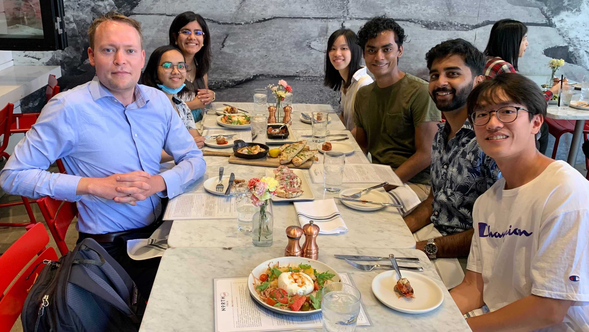
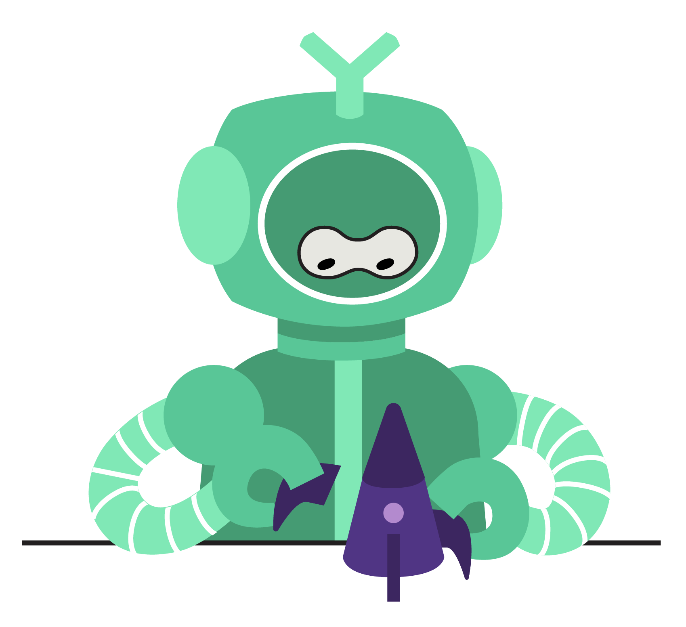
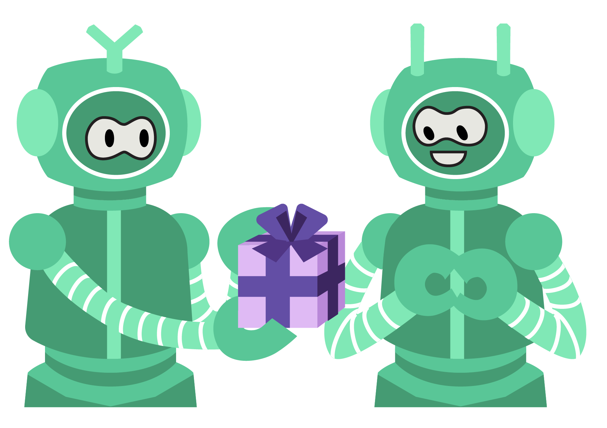

- 11/2022 One paper accepted to EMNLP 2022! Generalization Differences between End-to-End and Neuro-Symbolic Vision-Language Reasoning Systems
- 10/2022 New VLN benchmark release! IVLN challenges agents to follow a language-guided tour of a home, enabling them to leverage persistent memory.
- 09/2022 New pre-print! ProgPrompt adapts LLMs for situated robot task planning by prompting them with pythonic programs.
- 09/2022 CLiMB 🧗♂️ was accepted to the NeurIPS 2022 Datasets and Benchmarks Track!
- 06/2022 Pre-print alert! We introduce CLiMB 🧗♂️, a new continual learning benchmark for vision-and-language tasks.
- 05/2022 REU research opportunity! Available Fall 2022-Spring 2023. More details.
- 04/2022 Prof. Thomason talked to high school students at Viterbi K-12 STEM Center about robotics at Robotics Ed Week.
GLAMOR: Grounding Language in Actions, Multimodal Observations and Robots

Welcome to the GLAMOR Lab ✨ at the University of Southern California! We bring together natural language processing and robotics to connect language to the world (RoboNLP). Our lab is broadly interested in connecting language to agent perception and action, and lifelong learning through interaction.
Research Areas
Language & Perception
Language paired with sensory perception like vision, audio, and haptics. This scope includes audio-visual speech recognition, visual dialog, and recognizing heavy means increased physical weight.
 Embodiment & Action
Language paired with or leading to world actions. This scope includes learning that left corresponds to a spatial orientation, and that it's hot is a pragmatic warning against physically touching an object.
 The Social World
Language is what language does, and so language use in social contexts to cause changes in others' behavior and states of mind is the highest scope for grounded natural langauge use.
Group

Jesse Thomason
Principal Investigator